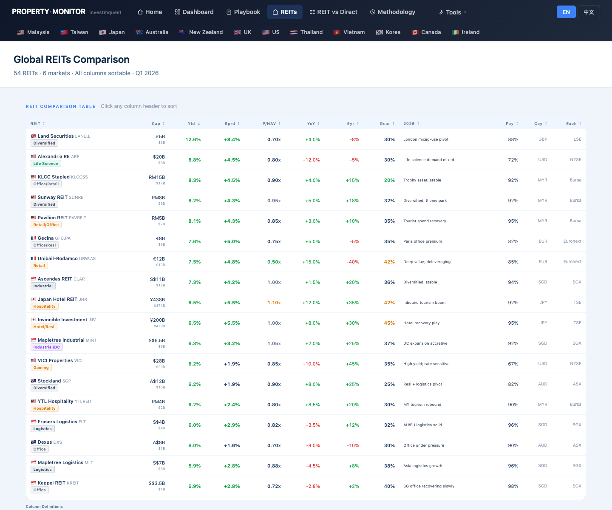
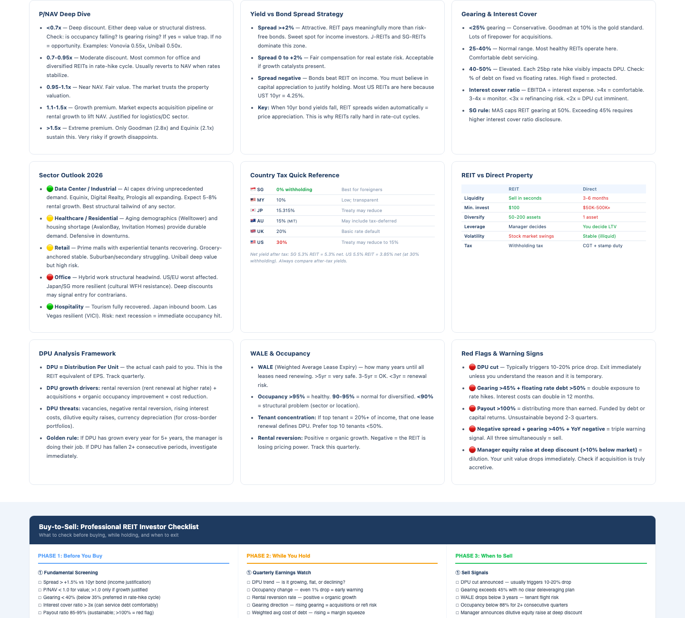
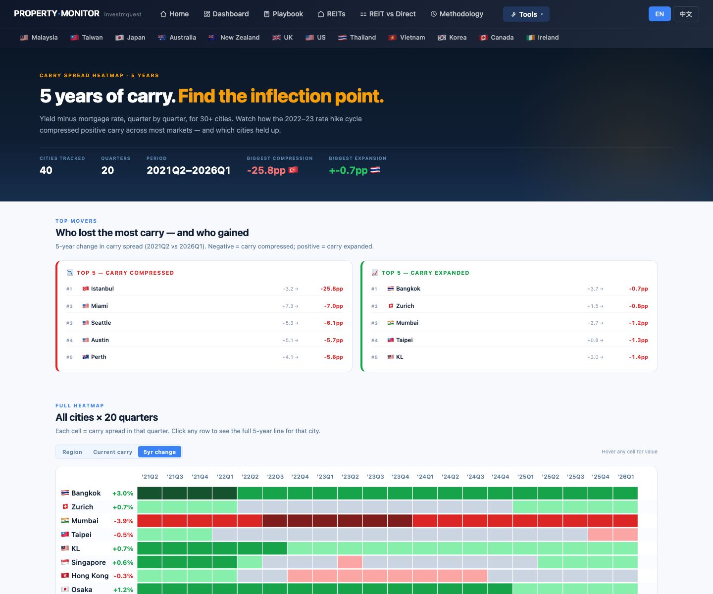
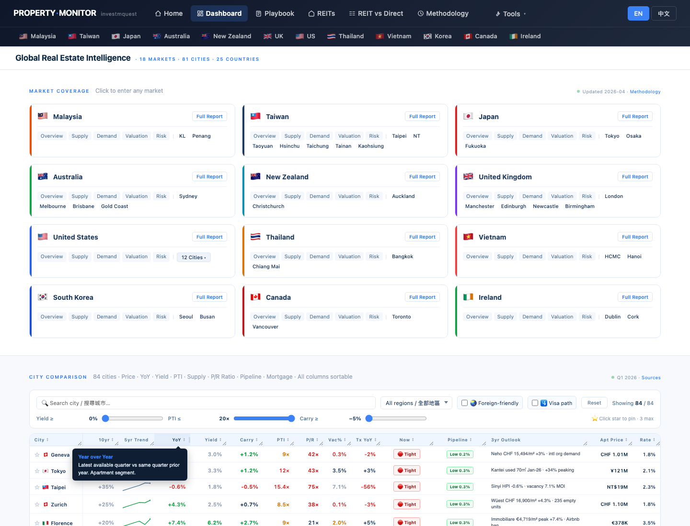
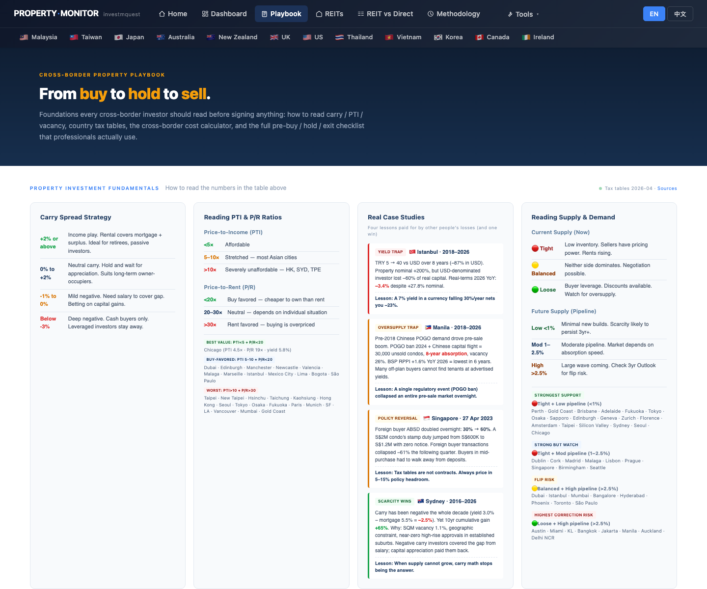
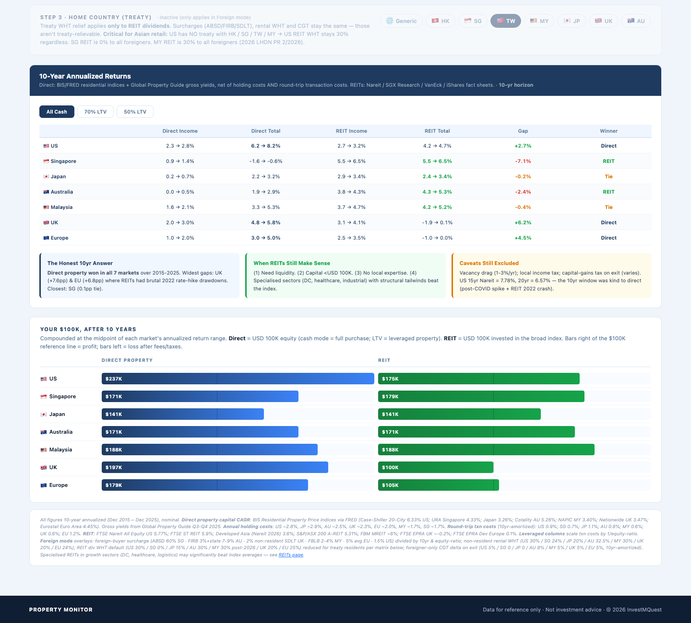
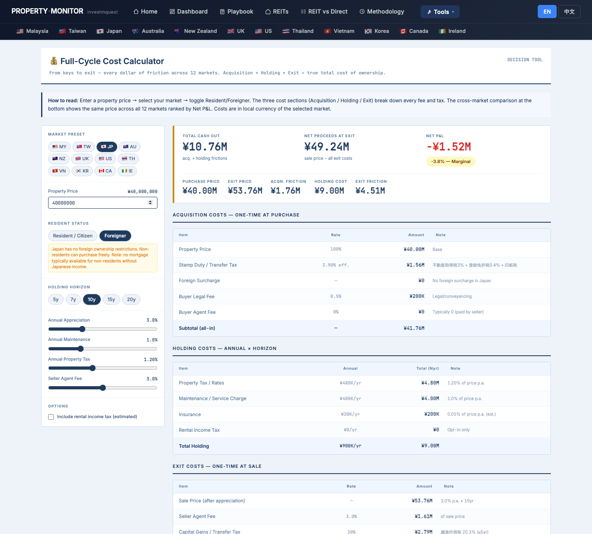
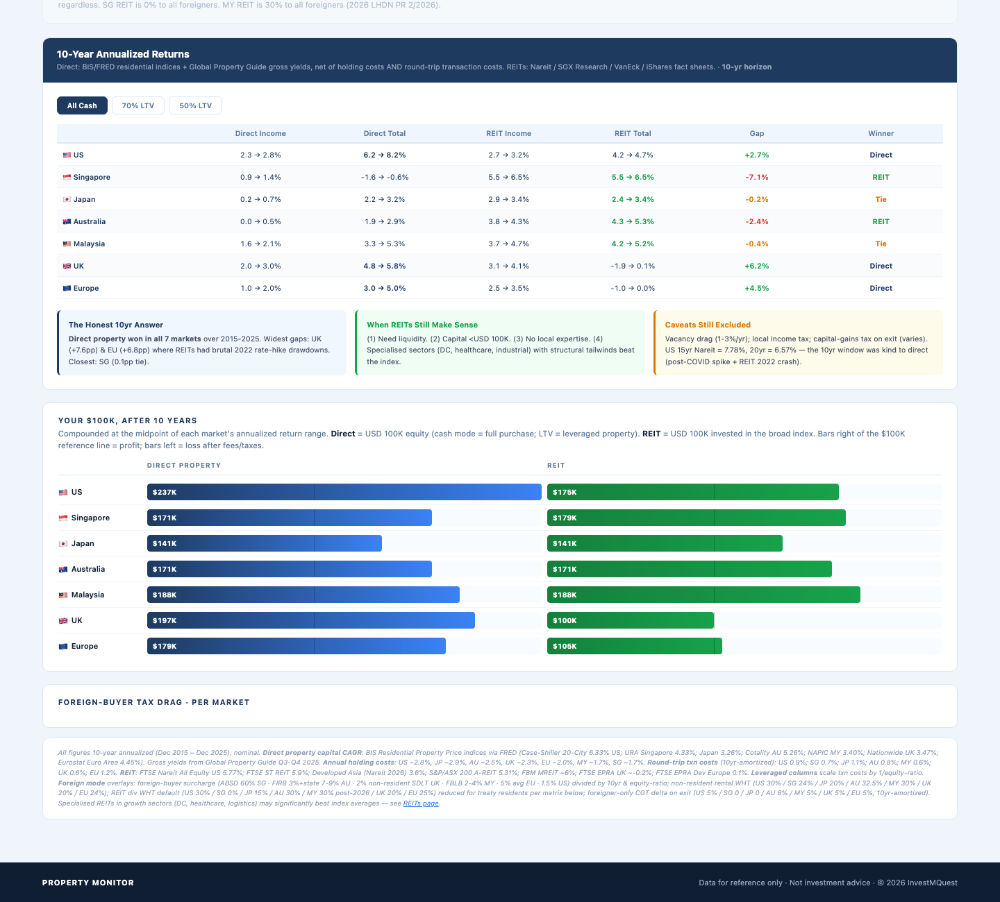
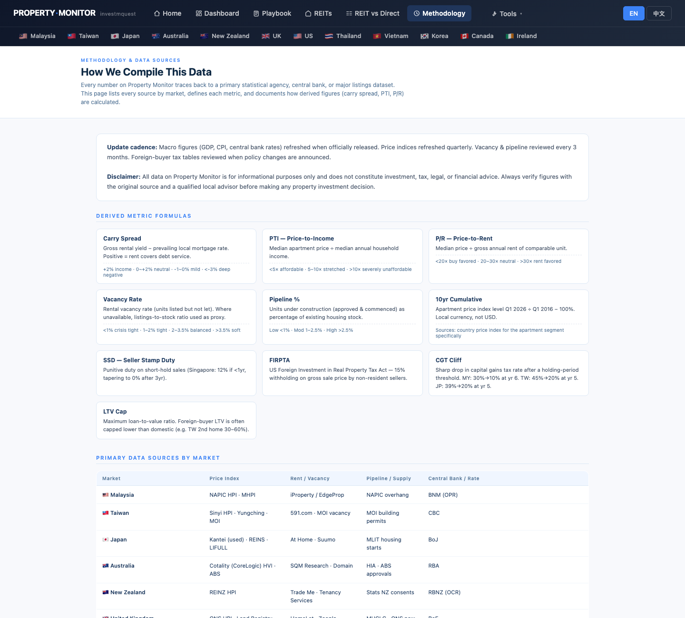

Ms. Tsai (38, Taipei, financial services professional) has NT$ 30M in liquid savings and zero interest in moving abroad or managing tenants. She is the opposite of the JP/MM2H/AU PR personas — no single country, no visa, no physical property management. She wants global real estate exposure with daily liquidity, and she understands that REIT withholding tax varies dramatically by market and her residency status. This walkthrough shows her how to use the site's cross-market analytical tools — REITs page, REIT vs Direct, Carry Heatmap, Pipeline Cliff, Dashboard — to assemble a methodologically sound 3–4 position portfolio. It is not investment advice, tax advice, or recommendations to buy specific securities. 蔡小姐，38 歲，台北，金融從業人員，手上 NT$ 3,000 萬現金，完全不想出國或管租客。她是 JP / MM2H / AU PR persona 的反面——沒有鎖定特定國家、不需要簽證、不要管物業。她要的是每日流動性的全球房地產曝險，而且她知道 REIT 預扣稅因市場與她的稅務身分而差異巨大。這份導覽示範她如何用站上的跨市場分析工具——REITs 頁、REIT vs Direct、Carry Heatmap、Pipeline Cliff、Dashboard——組建方法論嚴謹的 3–4 檔組合。本文不是投資建議、稅務建議或特定證券推薦。
- Where does this site compare REITs across markets — US, SG, JP, AU, MY, UK all in one place?這個網站在哪裡跨市場比較 REIT？美、新、日、澳、馬、英一次看？
- How do I see whether buying a REIT or buying direct property gives better returns — adjusted for my Taiwan residency and non-resident withholding?怎麼看 REIT 和直接買實體哪個報酬更好，要加入我台灣居民身分和非居民預扣稅？
- Which markets still have positive carry (yield above mortgage cost) and which have been crushed by the rate cycle?哪些市場的 carry（收益率 - 房貸成本）還是正的，哪些已被升息循環摧毀？
- Which markets face a supply wave coming in the next 2 years — oversupply = bad for REIT rental income?哪些市場未來 2 年面臨供給衝擊 — 供給過剩會傷害 REIT 租金收入？
- Is there a single filterable table of all 81 cities so I can cross-compare yield, carry, and pipeline at once?有沒有可篩選的 81 城市大表，讓我一次交叉比較 yield、carry 和 pipeline？
- If I decide on any direct property position for leverage, how do I model the cost for a foreign Taiwanese buyer?如果我決定配一檔直接持有實體來加槓桿，怎麼以台灣外籍身分試算成本？
- Where are the data sources for each market, so I know how fresh the numbers are?每個市場的資料來源在哪裡，讓我知道數字有多新？
Ms. Tsai's cross-market tool tour — 12 stops蔡小姐的跨市場工具旅程 — 12 個停靠點
Each stop is a real page on the site. The journey goes in tool-order: orient → REITs macro → tax math → carry → supply → build shortlist → validate. Follow along in another tab — every URL works. 每個停靠點都是站上的一頁實際畫面。旅程順序：定向 → REIT 總覽 → 稅務數學 → 利差 → 供給 → 建立名單 → 驗證。建議另開分頁跟著走 — 所有連結都能直接點。
Land on the home page — orient with the world scatter and "I want yield" persona進入首頁 — 用世界散點圖和「我要收租」persona 定向
What she sees: the chosen card lights up with a checkmark. The world scatter chart and global map automatically highlight high-yield markets. The Top-5 strip beneath the map reweights to yield-leading cities. She sees which regions are visually clustering at high yield — this is her first orientation into where the income story is strongest globally. 螢幕出現什麼：選中的卡片亮起打勾。世界散點圖和全球地圖自動高亮高收益市場。地圖下方 Top-5 列表以 yield 領先城市重新排序。她看到哪些地區的高 yield 城市在視覺上群聚 — 這是她第一次了解全球哪裡收入故事最強。

Open Global REITs — 54 REITs across 6 markets, all columns sortable打開 Global REITs — 54 檔 REIT 跨 6 市場，所有欄位可排序
What she sees (9 columns): REIT name/ticker/market · Cap (market cap) · Yield (trailing 12m dividend yield) · Spread (yield minus 10yr gov bond of listing country) · P/NAV (price ÷ NAV; <1.0 = discount) · YoY (1yr price return) · 5yr (5yr total return incl. dividends) · Gear (gearing ratio) · Pay% (payout ratio). Green/red badges highlight positive/negative readings. All 54 rows cover US, SG, JP, AU, MY, UK markets. 螢幕出現什麼（9 欄）：REIT 名稱/代碼/市場 · 市值 · 殖利率（過去 12 月配息收益率）· 利差（殖利率減上市國 10 年期公債）· P/NAV（市價 ÷ NAV；<1.0 = 折價）· 年漲（1 年價格報酬）· 5 年（5 年總報酬含配息）· 槓桿（槓桿率）· 派息（配息率）。綠/紅標記高亮正/負值。54 列涵蓋美、新、日、澳、馬、英市場。

Stay on /reits — scroll to fundamentals, sector outlook, and the buy-to-sell checklist停留在 /reits — 下捲讀基本知識、產業展望與買到賣清單
What she sees: Sector Outlook 2026 color-codes sectors — green Data Center / Industrial (AI capex tailwind), amber Healthcare / Retail, red Office (hybrid work headwind). The Professional Picks tables show each REIT's score (max 100), yield, spread, P/NAV, YoY, gearing, and a one-line thesis. The scoring methodology explains 6 factors: Yield Quality (25pts), Valuation (20pts), Momentum (15pts), Balance Sheet (15pts), Sector Tailwind (15pts), Value Trap Filter (10pts). 螢幕出現什麼：2026 年產業展望用顏色標記 — 綠色資料中心/工業（AI 資本支出順風）、琥珀色醫療/零售、紅色辦公（混合辦公逆風）。專業精選表格顯示每檔 REIT 的分數（滿分 100）、殖利率、利差、P/NAV、年漲、槓桿和一行摘要。評分方法說明 6 大因子：殖利率品質 25 分、估值 20 分、動能 15 分、資產負債表 15 分、板塊順風 15 分、價值陷阱過濾 10 分。

REIT vs Direct — set Foreign + TW + 10yr + Cash to see the 7-market comparison as a Taiwanese investorREIT vs Direct — 切 Foreign + TW + 10yr + Cash，以台灣人身分看 7 市場比較
What she sees: the 7-row comparison table (US / SG / JP / AU / MY / UK / EU) shows Direct Income, Direct Total, REIT Income, REIT Total, Gap, Winner for each market — all adjusted for her Taiwan-resident foreign status. The Step 3 Home Country bar shows the TW chip highlights a Treaty Relief box explaining which markets have a DTA with Taiwan that reduces REIT withholding. The critical information: US has NO treaty with TW → US REIT WHT stays at the default rate regardless. SG REIT is 0% to ALL foreigners regardless of treaty. MY REIT is 30% to all foreigners from 2026 (LHDN PR 2/2026). Below the table, the $100K endpoint bars visually show where Ms. Tsai's money ends up after 10 years for each market — the SG direct bar collapses because of the 60% ABSD on foreign buyers. 螢幕出現什麼：7 列比較表（美/新/日/澳/馬/英/歐）顯示每市場的實體收入、實體總報酬、REIT 收入、REIT 總報酬、差距、勝出 — 全部根據她的台灣外籍身分調整。步驟 3 母國列顯示 TW chip 高亮Treaty Relief 框，說明哪些市場與台灣有 DTA 可降低 REIT 預扣。關鍵資訊：美國與 TW 沒有租稅協定 → 美 REIT 預扣維持預設稅率。新加坡 REIT 對所有外國人 0% 不分協定。馬來西亞 REIT 2026 起對所有外國人 30%（LHDN PR 2/2026）。表格下方的 $100K 終值長條圖視覺化展示蔡小姐的資金在每個市場 10 年後的位置 — 新加坡實體那條因 60% ABSD 而崩塌。

Carry Heatmap — find which markets still have positive carry after the 2022–23 rate hike cycleCarry Heatmap — 找出 2022–23 升息循環後哪些市場還有正 carry
What she sees: the heatmap is cities × 20 quarters. Each cell's color = that quarter's carry spread (red = negative carry, green = positive, dark red = deeply negative). Sorting by "5yr change" puts cities that gained carry at the top, and cities that lost carry at the bottom. The color gradient scale runs from −4% (deep red = money-losing carry) to +5% (deep green). Hovering any cell shows a tooltip with that city's exact carry value. The Top Movers section shows which cities had the most dramatic 5yr carry trajectory. 螢幕出現什麼：熱力圖是城市 × 20 季。每格顏色 = 該季利差值（紅 = 負 carry，綠 = 正，深紅 = 嚴重負）。按「5 年變動」排序後，carry 增加的城市排在最前，損失最大的排在最後。顏色漸層從 −4%（深紅 = 虧損 carry）到 +5%（深綠）。滑鼠停留任一格顯示該城市精確 carry 值的 tooltip。Top Movers 區顯示 5 年 carry 軌跡最戲劇化的城市。

Pipeline Cliff — avoid markets with heavy 2026–2028 supply waves that could hurt REIT rental incomePipeline Cliff — 避開 2026–2028 供給衝擊重的市場，保護 REIT 租金收入
What she sees: the three risk segment cards each contain pill chips listing affected cities with their supply intensity percentage. DANGER bucket cities (red chips) include high-supply markets. Each city chip shows the market flag + its peak-quarter oversupply percentage. The calendar heatmap below the cards shows all cities × 10 quarters (2026Q3–2028Q4) — color intensity = delivery volume (dark orange/red = heavy handovers). Clicking a city shows a detail panel with a 10-quarter bar chart, a narrative paragraph explaining the supply story, and 4 KPI stats. 螢幕出現什麼：三個風險分組卡各含城市 pill 籌碼，附供給強度百分比。DANGER 組城市（紅色籌碼）包含高供給市場。每個城市籌碼顯示市場旗幟 + 高峰季過剩百分比。下方日曆熱力圖顯示所有城市 × 10 季（2026Q3–2028Q4）— 顏色深度 = 交屋量（深橘/紅 = 大量交屋）。點城市查看有 10 季長條圖、說明供給故事的敘事段落，以及 4 格 KPI 統計的詳細面板。

Dashboard — filterable 81-city table, cross-compare yield, carry, and pipeline in one viewDashboard — 可篩選的 81 城市大表，一次交叉比較 yield、carry 和 pipeline
What she sees: the hero bar shows total coverage (18 markets, 81 cities, 25 countries) with quick-link tool buttons. Below: a markets grid with market cards — each card shows country, subpages (Overview / Supply / Demand / Valuation / Risk / Report), and city links. The full-site dashboard (accessed by scrolling) shows the live ticker with interest rate badges per market (OPR, BOJ, RBA, etc.), yield and carry comparisons. From here she can quickly jump to any market's deep analytics to verify carry/supply numbers she read on the heatmap and pipeline pages. 螢幕出現什麼：hero 列顯示總覆蓋範圍（18 市場、81 城市、25 國家）附工具快速連結按鈕。下方：含市場卡的格狀版面 — 每張卡顯示國家、子頁（Overview / Supply / Demand / Valuation / Risk / Report）、城市連結。全站 dashboard（下捲讀取）顯示附各市場利率標籤的即時跑馬（OPR、BOJ、RBA 等）、yield 和 carry 比較。從這裡她能快速跳到任何市場的深度分析，驗證她在熱力圖和 pipeline 頁讀到的 carry / 供給數字。

Playbook — learn the portfolio construction framework before picking positionsPlaybook — 在選部位前先讀投資組合建構框架
What she sees: the Playbook has a dark hero with the headline strategy framework. Sections cover: how to layer income vs growth positions, when each market cycle favors REITs vs direct, how to think about currency exposure across multiple markets, and how to size positions given withholding tax drag. The cost calculator widget is embedded in the Playbook as a quick estimator for individual market costs. 螢幕出現什麼：Playbook 有深色 hero 配頭條策略框架。章節涵蓋：如何分層配置收入型 vs 增值型部位、每個市場週期何時有利於 REIT vs 直接持有、如何看待跨多市場的匯率曝險、以及如何在預扣稅拖累下計算部位大小。成本計算小工具內嵌在 Playbook 中，作為個別市場成本的快速估算工具。

Cross-region portfolio assembly — how Ms. Tsai reads the tools to identify 3–4 candidate positions跨地區組合組裝 — 蔡小姐如何讀這些工具來識別 3–4 個候選部位
Her 5-filter assembly method (all from the tools she already visited):
① Spread > +2% on /reits — income justification screen. She retains only REITs where yield meaningfully exceeds the local 10yr bond. This eliminates most US REITs (flat bond-to-yield spread given UST 4.25%) except DC/specialty names with growth thesis.
② Carry status from /carry-heatmap — fundamental asset quality filter. She avoids REIT-heavy markets where carry collapsed post-2022. Markets with expanded carry = underlying tenant base is solvent and can absorb rent increases.
③ EASING pipeline from /pipeline-cliff — occupancy protection filter. She avoids REITs concentrated in DANGER-bucket cities. Even a high-yield REIT in an oversupply market will face DPU cuts in 2027–28.
④ WHT per /reit-vs-direct TW chip — after-tax income filter. SG REITs have 0% WHT regardless of treaty status = she receives the full yield. US REITs at 30% WHT = she loses nearly a third of every dividend. This makes SG REITs structurally more efficient for her.
⑤ P/NAV + Gearing from /reits sort — value and balance sheet screen. She avoids P/NAV >1.5x (no growth catalyst remaining) and Gearing >40% in rising-rate environments. She targets the P/NAV 0.7–1.1x sweet spot.
After applying all 5 filters, she arrives at 3–4 candidate positions by region and sector logic — e.g., a SG-listed REIT for near-zero WHT income, a JP-REIT with strong spread and tourism tailwind, a US data-center REIT where the structural AI demand justifies the WHT cost, and possibly a direct position in a lower-surcharge market if leverage math works.
她的 5 步篩選組裝法（全來自她已造訪的工具）：
① /reits 上 Spread > +2% — 收入正當性篩選。她只保留殖利率明顯超過當地 10 年期公債的 REIT。這篩掉大多數美國 REIT（鑒於美債 4.25%，債債利差偏窄），除了具成長論點的 DC / 特殊板塊。
② /carry-heatmap 的 carry 狀態 — 基本資產品質篩選。她避開 2022 年後 carry 崩潰的 REIT 重倉市場。carry 擴大的市場 = 底層租客群有償付能力，能承受租金調漲。
③ /pipeline-cliff 的 EASING pipeline — 出租率保護篩選。她避開集中在 DANGER 組城市的 REIT。即使高 yield 的 REIT，在供給過剩市場也面臨 2027–28 年 DPU 削減風險。
④ /reit-vs-direct TW chip 的 WHT — 稅後收入篩選。新加坡 REIT 無論協定狀態 0% 預扣 = 她拿到全額殖利率。美國 REIT 30% 預扣 = 她每筆股息損失將近三分之一。這讓新加坡 REIT 對她在結構上更有效率。
⑤ /reits 排序的 P/NAV + Gearing — 估值和資產負債表篩選。她避開 P/NAV >1.5 倍（無剩餘成長催化劑）和在升息環境槓桿 >40%。她瞄準 P/NAV 0.7–1.1 倍的甜蜜點。
套用全部 5 個篩選後，她以地區和板塊邏輯得出 3–4 個候選部位 — 例如，一檔新加坡上市 REIT（近零預扣收入）、一檔具強利差和觀光順風的日本 REIT、一檔結構性 AI 需求合理化預扣成本的美國資料中心 REIT，以及可能一個在低附加稅市場的直接持有部位（如果槓桿數學成立的話）。

Cost Calculator — if she adds a direct property position (e.g., JP), model the full-cycle cost as a foreign Taiwanese buyerCost Calculator — 如果她加一檔直接持有（例如日本），以台灣外籍買家身分試算全週期成本
What she sees: three hero KPI cards — TOTAL CASH OUT, NET PROCEEDS AT EXIT, NET P&L verdict. Three breakdown tables: Acquisition (purchase price, stamp duty for foreigners, legal fee, agent fee) · Holding (property tax, maintenance, insurance, rental income WHT for non-residents) · Exit (agent fee, capital gains tax for foreign sellers). A stacked bar chart visualizes the cost waterfall. An annual cost line chart shows the holding cost trajectory. A 12-market comparison table at the bottom highlights the JP row vs all other markets — showing her where JP sits in the global foreign-buyer cost spectrum. 螢幕出現什麼：三個 hero KPI 卡 — TOTAL CASH OUT、NET PROCEEDS AT EXIT、NET P&L 判決。三張明細表：Acquisition（物業價、外籍印花稅、律師費、仲介費）· Holding（固稅、維護、保險、非居民租金收入預扣）· Exit（賣方仲介費、外籍賣方資本利得稅）。堆疊長條圖視覺化成本瀑布。年度成本折線圖展示持有成本軌跡。底部 12 市場比較表高亮 JP 列 vs 所有其他市場 — 顯示日本在全球外籍買家成本譜系中的位置。

Return to REIT vs Direct — compare foreign WHT drag across her 3–4 shortlisted markets side by side回到 REIT vs Direct — 並排比較她 3–4 個入圍市場的外籍預扣稅拖累
What she sees: the Foreign-Buyer Tax Drag section surfaces only when the Foreign toggle is active. It shows per-market cards in a grid — each card has the market flag, REIT WHT (default → treaty for TW chip), direct foreign surcharge %, rental WHT %, and CGT extra %. This is the "tax translation layer" — it converts the gross yield numbers from /reits.html into net-after-tax yields for her specific profile. The 10yr endpoint bar chart above also updates with these tax adjustments, so she can see the compounded impact over 10 years, not just the per-year rate. 螢幕出現什麼：外國買家稅負明細區只在 Foreign toggle 啟動時顯示。格狀排列每市場一張卡 — 各卡有市場旗幟、REIT 預扣（預設 → TW chip 的協定稅率）、實體外籍附加費 %、租金預扣 %、CGT 額外 %。這是「稅務轉換層」— 把 /reits.html 上的毛 yield 數字，轉換成她個人情境下的稅後淨 yield。上方的 10 年終值長條圖也隨這些稅務調整更新，讓她看到 10 年複利影響，不只是每年稅率。

Methodology — verify data sources for each market in her shortlist before acting on any numberMethodology — 在對任何數字採取行動前，驗證她入圍名單中每個市場的資料來源
What she sees: the intro section explains the site's methodology philosophy (known limitations, indicative nature of carry model, data lag). The main source table lists each of the 20 markets with 4–5 source columns per market. A Glossary section defines all KPIs used across the site (Carry, Overhang, PTI, P/NAV, DPU, WALE, etc.). A note box at the bottom flags that REIT data is sourced from Bloomberg, SGX, TSE, ASX, Bursa, Euronext, LSE — and is refreshed quarterly. 螢幕出現什麼：引言區解釋網站方法論哲學（已知限制、carry 模型的示意性質、資料延遲）。主要來源表列出 20 個市場各自的 4–5 個來源欄。詞彙表章節定義全站使用的所有 KPI（Carry、Overhang、PTI、P/NAV、DPU、WALE 等）。底部附注說明 REIT 資料來源為 Bloomberg、SGX、TSE、ASX、Bursa、Euronext、LSE，並每季刷新。

Site cheat sheet — 6 patterns Ms. Tsai uses on every visit網站小抄 — 蔡小姐每次造訪都用到的 6 個規則
These work the same way on every page across all markets — learn once, use everywhere.以下規則每一頁、每個市場都一致 — 學一次，整站通用。
Tools dropdown — all cross-market toolsTools 下拉 — 所有跨市場工具
Every analytical tool Ms. Tsai uses in this walkthrough lives in the Tools dropdown: REITs, REIT vs Direct, Carry Heatmap, Pipeline Cliff, Cost Calculator, Dashboard, Playbook, Methodology. If a tool isn't market-specific, it's here.本導覽中蔡小姐用到的每個分析工具都在 Tools 下拉：REITs、REIT vs Direct、Carry Heatmap、Pipeline Cliff、Cost Calculator、Dashboard、Playbook、Methodology。不是特定市場專屬的工具就在這裡。
Tip: bookmark /reits.html and /reit-vs-direct.html as your starting point for any REIT research session.小技巧：把 /reits.html 和 /reit-vs-direct.html 加入書籤，作為每次 REIT 研究的起點。
The 3-toggle system on REIT vs DirectREIT vs Direct 的 3 組切換系統
Three toggles drive every number: Step 1 Local/Foreign (tax residency), Step 2 5/10/15/20yr (holding period — the ABSD amortization denominator), Step 3 Home Country chip (which treaty applies). Always set these in order before reading any comparison number — the defaults are Local + 10yr + no home country, which is NOT Ms. Tsai's situation.三組切換決定每個數字：步驟 1 本國/外國（稅務身分）、步驟 2 5/10/15/20年（持有年限 — ABSD 攤銷分母）、步驟 3 母國 chip（適用哪個租稅協定）。讀任何比較數字前，務必先按順序設定這三組 — 預設值是本國 + 10年 + 無母國，不是蔡小姐的情境。
Key insight: US has NO treaty with TW/HK/SG/MY → US REIT WHT stays at default 30% regardless of chip selection.關鍵洞察：美國與 TW / HK / SG / MY 無租稅協定 → 美 REIT 預扣無論選哪個 chip 都維持預設 30%。
Sort columns on /reits — Spread first, not raw Yield/reits 的欄位排序 — 先按 Spread，不是原始 Yield
Sorting by raw Yield is misleading across markets with different bond rates. Sort by Spread (yield minus 10yr gov bond) for a level playing field. A REIT with yield −0.5pp vs its 10yr bond = bonds beat REIT income; you'd need capital appreciation thesis to justify. A REIT with +4pp spread = strong income justification even in a rising-rate environment.在不同公債利率的市場間，按原始 Yield 排序會有誤導。按 Spread（殖利率減 10 年期公債）排序才能公平比較。REIT 殖利率比 10 年期公債低 0.5pp = 公債收入勝過 REIT；你需要資本增值論點才能合理。+4pp 利差 = 即使在升息環境，收入正當性依然強。
Bond rates used: US 4.25% · SG 3.10% · JP 1.05% · AU 4.35% · MY 3.85% · UK 4.20% · EU 2.65% (German Bund)使用的公債利率：美 4.25% · 新 3.10% · 日 1.05% · 澳 4.35% · 馬 3.85% · 英 4.20% · 歐 2.65%（德國 Bund）
KPI card colors — same system site-wideKPI 卡顏色 — 全站一致
Left border color tells you the read at a glance. On the carry heatmap and pipeline cliff, the color gradient uses a different but consistent scale (green = positive carry / easing supply; red = negative / danger).左邊框顏色一眼告訴你判讀。在 carry 熱力圖和 pipeline cliff，顏色漸層用不同但一致的尺度（綠 = 正 carry / 供給緩和；紅 = 負 / 危險）。
Carry Heatmap sort modes — use "5yr change" for REIT screeningCarry Heatmap 排序模式 — 用「5 年變動」篩 REIT
Three sort buttons: Region (geography grouping), Current carry (sort by latest quarter value), 5yr change (sort by how much carry changed since 2021Q2). For REIT screening, "5yr change" is most useful — it shows which markets' underlying carry story is improving vs deteriorating, signaling forward DPU risk.三個排序按鈕：Region（地理分組）、Current carry（按最新一季值排序）、5yr change（按 2021Q2 以來 carry 變化排序）。REIT 篩選用「5 年變動」最有用 — 顯示哪些市場的底層 carry 故事在改善 vs 惡化，預示未來 DPU 風險。
Click any city row for its 5-year carry line chart + 4 KPI stats (2021Q2 carry, 2026Q1 carry, 5yr change, current yield/rate).點任意城市列查看 5 年 carry 折線圖 + 4 格 KPI 統計（2021Q2 carry、2026Q1 carry、5 年變動、當下 yield/利率）。
Language + PDF — switch to 中文 before printing語言 + PDF — 列印前先切到中文
Top-right of every page: two pill buttons EN / 中文. Choice is remembered via localStorage. Press ⌘ + P → Save as PDF. The print stylesheet hides the navbar for a clean PDF. Switch to 中文 first if you want the PDF in Chinese.每頁右上角：兩顆膠囊鈕 EN / 中文。選擇用 localStorage 記住。按 ⌘ + P → 另存為 PDF。印刷樣式表自動隱藏 navbar。如果你要中文版 PDF，先切到中文。
This walkthrough has a dedicated "Download PDF" button below.本導覽底部有專屬「下載 PDF」按鈕。
What Ms. Tsai walks away with — and what she must take outside this site蔡小姐帶走什麼 — 以及哪些必須拿到站外去問
After the 12-stop tour, she has a methodologically sound shortlist process and a clear separation between "questions the site answered" and "questions that require licensed advisors."走完 12 站後，她有一套方法論嚴謹的入圍流程，並能清楚分開「網站已回答的問題」與「需要有執照顧問回答的問題」。
✓ The site answered these for her✓ 網站已回答的
- Where to compare 54 REITs across 6 markets in one sortable table, with yield, spread, P/NAV, gearing, sector all visible simultaneously (/reits)在哪裡跨 6 市場比較 54 檔 REIT，一張可排序表格同時看到殖利率、利差、P/NAV、槓桿、板塊（/reits）
- How to adjust the comparison for her Taiwan / Foreign residency — the 3-toggle system on /reit-vs-direct gives her the after-tax numbers that a local-mode comparison misses entirely如何把比較調整到她的台灣 / 外籍身分 — /reit-vs-direct 的 3 組切換給她稅後數字，這是本國模式比較完全忽略的
- Which markets still have positive carry after the rate cycle (carry heatmap, sorted by 5yr change) — and the city-level line charts showing exactly when carry compressed/expanded升息循環後哪些市場仍有正 carry（carry 熱力圖，5 年變動排序）— 以及城市層級折線圖顯示 carry 何時收斂/擴大
- Which markets face the heaviest 2026–2028 supply pipeline (pipeline cliff DANGER/WATCH/EASING buckets) — with 10-quarter delivery charts for verification哪些市場面臨 2026–2028 年最重的供給管道（Pipeline Cliff DANGER/WATCH/EASING 分組）— 附 10 季交屋量圖表驗證
- How to apply a 5-filter portfolio assembly framework (spread, carry, pipeline, WHT, P/NAV) using the site's existing tools — without needing to build Excel models from scratch如何用站上現有工具套用 5 步篩選組合框架（利差、carry、pipeline、WHT、P/NAV）— 不需要從頭自建 Excel 模型
- The full cost of a direct property position as a foreign Taiwanese buyer for any of her candidate markets — acquisition, holding, and exit all in one calculator (/tools/cost-calculator)台灣外籍買家在任何候選市場的直接持有全週期成本 — 取得、持有、退場一個計算工具搞定（/tools/cost-calculator）
- Which markets have zero REIT WHT for foreigners (SG = 0% regardless of treaty) vs. 30% (MY post-2026, US default for non-treaty residents like TW)哪些市場對外國人的 REIT 預扣為零（新加坡 = 0%，不管協定狀態）vs 30%（馬來西亞 2026 後、對台灣等無協定居民的美國預設值）
- Where each number comes from — Methodology page: REIT data from Bloomberg/exchanges, carry model from CB policy rates + typical spreads, pipeline from CMHC/Colliers/NAPIC/Cotality每個數字的來源 — Methodology 頁：REIT 資料來自 Bloomberg / 交易所，carry 模型來自央行政策利率 + 典型利差，pipeline 來自 CMHC / Colliers / NAPIC / Cotality
→ Questions for advisors outside this site→ 必須拿到站外問專業人士的
- Specific REIT security selection and current pricing — the site provides screening frameworks, not real-time buy signals. A licensed broker with current exchange data must execute具體 REIT 證券選擇和當前價格 — 網站提供篩選框架，不提供即時買進信號。需要有執照的券商用當前交易所資料執行
- Taiwan Securities Investor and Futures Trader Protection Center (SIFTA) / FSC compliance for holding foreign REITs as a Taiwan tax resident — disclosure, foreign income reporting, and withholding credit rules台灣持有外國 REIT 的法規遵循（SIFTA / FSC）— 身為台灣稅務居民的申報、海外所得申報和預扣稅抵免規則
- Treaty application forms — even where a DTA exists (JP-TW), the actual WHT reduction requires filing the correct form with the REIT's withholding agent at the right time. A tax advisor in each jurisdiction must handle this協定申請表 — 即使有 DTA（JP-TW），實際的 WHT 減免需要在正確時間向 REIT 的扣繳代理人提交正確表格。各司法管轄區的稅務顧問必須處理
- FX hedging strategy across a multi-currency REIT portfolio (USD, JPY, SGD, AUD) — NT$ can be volatile against JPY especially. A bank FX desk or wealth manager handles hedging instruments多貨幣 REIT 組合的外匯避險策略（美元、日圓、新幣、澳幣）— 台幣對日圓尤其可能波動。銀行 FX 部門或財富管理處理避險工具
- Brokerage platform access — which platform permits Ms. Tsai (Taiwan resident) to hold all 4 target markets' REITs: TSE-listed J-REITs, SGX-listed S-REITs, NYSE-listed US REITs, and ASX-listed A-REITs may require different accounts or sub-brokerage relationships券商平台使用 — 哪個平台允許蔡小姐（台灣居民）持有 4 個目標市場的 REIT：TSE 上市 J-REIT、SGX 上市 S-REIT、NYSE 上市美 REIT、ASX 上市 A-REIT 可能需要不同帳戶或子券商關係
- Portfolio-level risk management — sector correlation (JP Hotel REIT + SG retail REIT + US data center REIT all have different rate sensitivities and recession behaviors). A licensed financial advisor models portfolio-level VaR and stress scenarios組合層級風險管理 — 板塊相關性（日本飯店 REIT + 新加坡零售 REIT + 美國資料中心 REIT 各有不同的利率敏感度和衰退行為）。有執照的財務顧問建模組合層級 VaR 和壓力情境
The site's best-supported call for Ms. Tsai站上資料能支持的最佳選項 — 給蔡小姐
Not a personalized recommendation — a single, opinionated call assembled only from data this site already shows in SECTIONS 01–04.非個人化推薦 — 是從 SECTION 01–04 站上資料推導出的單一明確建議。
✓ Pre-commit checklist (from site data)✓ 進場前 checklist（站上資料能驗證的）
/reits.html: each of the 4 markets' REIT yield + cap-rate spread within historical band./reits.html：4 市場的 REIT yield + cap rate spread 都在歷史區間。- Carry Heatmap: all 4 markets' rolling carry positive (or 3 of 4 with documented reason for the outlier).Carry Heatmap：4 市場 rolling carry 都為正（或 3/4 為正，剩 1 個有明文 outlier 理由）。
- REIT vs Direct toggle: REIT advantage stays clear vs direct buy for her residency + horizon.REIT vs Direct toggle：REIT 對她的居民身分 + 持有期仍有明顯優勢。
/reit-vs-direct.htmlrisk-adjusted return: REIT Sharpe ratio not deteriorating below threshold./reit-vs-direct.html風險調整後報酬：REIT Sharpe 不低於門檻。- Methodology REIT row: every figure sourced from official exchanges (TSE / SGX / ASX / NYSE), not aggregator APIs.Methodology REIT 那列：每個數字都來自官方交易所（TSE / SGX / ASX / NYSE），非聚合 API。
→ Off-site next steps (the site cannot answer)→ 走出站外的下一步（站上無法回答的）
- Brokerage research (IBKR / Firstrade / 富邦 / 元大) — multi-currency account, dividend withholding tax optimization, fee structure for periodic buys.券商研究（IBKR / Firstrade / 富邦 / 元大） — 多幣別帳戶、配息預扣稅優化、定期定額手續費結構。
- Taiwan 會計師 — REIT 海外所得納入 AMT 20% 計算，每年申報節點 + 海外稅扣抵策略.台灣會計師 — REIT 海外配息納入 AMT 20% 計算、每年申報節點 + 海外稅扣抵策略。
- Currency hedging strategy — JPY / SGD / AUD / USD exposure relative to NTD; decide whether to hedge passively (do nothing) or actively (currency forwards / FX ETF).匯率避險策略 — JPY / SGD / AUD / USD 相對 NTD 曝險；決定 passive（不動）或 active（遠期 / FX ETF）。
- ETF vs individual REIT picks — diversification trade-off; site shows the math but not which products fit her specific brokerage.ETF vs 個別 REIT — 分散度取捨；站上有數學但不知她券商可買哪些。
- Rebalancing protocol — yearly review with explicit threshold (e.g., rebalance if any market drifts > 10% from target).Rebalance 紀律 — 每年 review，明文門檻（如：任一市場偏離目標 > 10% 即 rebalance）。
A 4-market REIT portfolio (J / S / A / US ~30/25/20/25) is the single call most consistent with the 12 stops for a yield-first investor with no operational appetite. Individual REIT picks and rebalancing discipline are the off-site work the site flags but cannot do.4 市場 REIT 組合（J / S / A / US 約 30/25/20/25）是 12 站走完後對「殖利率優先、不想自管」投資者最一致的選項。個別選股 + rebalancing 紀律是站上有 flag 但無法執行的站外工作。